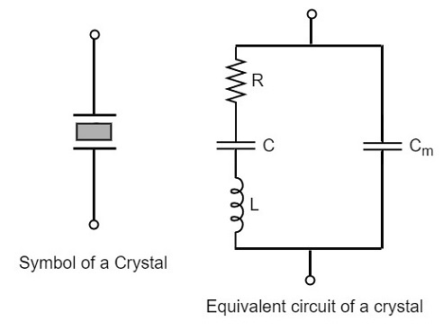

TIMER

- 2025 · 02 TIMER
Timer'lar, belirli bir süre boyunca beklemek veya belirli aralıklarla görevleri gerçekleştirmek için kullanılır. Örneğin, bir sensörden veri okumak için her 1 saniyede bir tetikleme yapabilir.
Zamanlayıcılar, bir olayın gerçekleşmesi için gereken süreyi takip edebilir. Örneğin, bir butona basıldığında bir zamanlayıcı başlatılabilir ve bu bir süre içinde başka bir işlem yapılması gerekebilir.
Timer'lar, bir zaman diliminde kesme sinyalleri üreterek işlemcinin başka görevleri yerine getirmesine olanak tanır. Bu, çoklu görev yönetimi için önemlidir. Bunların yanı sıra motor hız kontrolü için veya RGB LED renklerini ayarlamak için kullanılan PWM sinyalleri üretmek amacıyla kullanılabilir.
Gömülü sistemlerde gerçek zamanlı uygulamalar (RTOS) için zamanlayıcılar kritik öneme sahiptir. Zamanlayıcılar, sistemin belirli bir zaman diliminde görevleri yerine getirmesini sağlar.
| Özellik | Timer (Zamanlayıcı) | Counter (Sayıcı) |
|---|---|---|
| Artış Mekanizması | Her makine döngüsü için kayıt artırılır. | Dış bir giriş pinindeki 1'den 0'a (Falling Edge) geçişe göre kayıt artırılır. |
| Maksimum Sayım Hızı | Osilatör frekansının 1/12'si kadar maksimum sayım hızı. | Osilatör frekansının 1/24'ü kadar maksimum sayım hızı. |
| Kullanım Amacı | İç saat frekansını kullanarak gecikme üretir. | Dış sinyalleri saymak için kullanılır. |
| Giriş | İç saat sinyalini kullanır. | Dış bir sinyalin darbelerini sayar. |
| Çıkış | Belirli bir süre dolduğunda bir kesme veya sinyal üretir. | Belirli bir sayıya ulaştığında bir kesme veya sinyal üretir. |
| Örnek Uygulamalar | Motor hız kontrolü, zamanlayıcı görevleri, gecikme uygulamaları. | Buton basma sayımı, frekans ölçümü, olay sayımı. |
Oscillator
Belirli bir frekansta düzenli bir elektrik sinyali üreten bir devre veya cihazdır. Gömülü sistemlerde kullanılan osilatörler kristal osilatör olarak adlandırılmaktadır ve iki çeşittir.
- Internal Oscillator: Dahili sinyal üretici devreler olan düşük doğrulukta ve frekansta kare sinyal üretemi yapan dahili osilatörler. Genellikle daha düşük maliyetli ve daha az alan kaplayan çözümlerdir.
- Extermal Oscillator: Yüksek doğrulukta ve frekansta kare sinyal üretemi yapan harici osilatörler. Harici osilatörler daha kararlı sinyal üretimine sahip olduğundan dolayı tercih edilmektedir.
PLL (Phase Locked Loop)
PLL (Phase-Locked Loop), bir kontrol sistemidir ve çıkış sinyalinin fazını bir giriş sinyalinin fazına sabitler. Giriş ve çıkış fazlarının senkronize tutulması, aynı zamanda giriş ve çıkış frekanslarının da eşit olmasını sağlar; bu nedenle, bir PLL, giriş frekansını takip edebilir. Ayrıca, bir frekans bölücü eklenerek, PLL, giriş frekansının katı olan kararlı bir frekans üretebilir.
Geliştirme kartlarında, osilatörden üretilen sinyali çeşitli çevre birimlere veya pinlere aktarmak amacıyla kullanılmaktadır. Bu esnada sinyalin frekansını değiştirerek CPU, Peripheral ve PWM gibi birimlere yönlendirir.